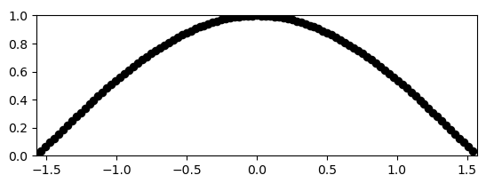
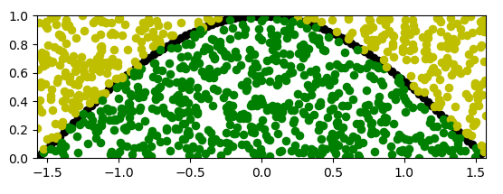

Assignment 2
Do this assignment on your own. You may not consult any other students. You are not allowed to use any online resources to complete this assignment other than the course website. This assignment is to be completed and submitted on Blackboard. All examinations, papers, quizzes and other graded work products and assignments are to be completed in conformance with The George Washington University Code of Academic Integrity. Any violations will be treated as violations of the Code of Academic Integrity.
Objectives
As usual, in each such assignment set, we will help develop your problem-solving skills by showing you how to solve one problem, the first and often hardest problem. Note: the solution will include some exercises for you that you will need to submit.
Assignment problems
1. Demo problem.
Consider the following lists:
A = [1, 3, 5, 7, 9, 11, 13]
B = [2, 5, 7, 9, 10, 11]
C = [10, 2, 5, 7, 15, 13]
D = [9, 11, 13, 14, 15]
Notice that the sub-list 5,7,9 in the first list A appears in the second list B whereas there is no 3-element sub-sequence in list A that appears in list C.
Such sublist searching is a common operation in dealing with DNA sequences in biology (except that their sequences have letters and not numbers).
Goal of this problem:
The goal of this problem is to write a function that prints the start position in each list for the first 3-element sublist found in both, going left to right.
The following incomplete program is provided to get things started:
def search_sublist(X, Y): # Determine: # 1. Whether a 3-element sub-list of X exists in Y and # 2. At what position (or list index). A = [1, 3, 5, 7, 9, 11, 13] B = [2, 5, 7, 9, 10, 11] C = [10, 2, 5, 7, 15, 13] D = [9, 11, 13, 14, 15] # This should print: Found: at i=2 in X and j=1 in Y search_sublist(A, B) # This should print: No 3-element sublist found search_sublist(A, C) # This should print: Found: at i=4 in X and j=0 in Y search_sublist(A, D)
At this point, try to address the following:
- First understand what is being asked.
- Do you see loops and if so, how would they range over the lists?
- Can the problem be broken down into parts, where you can solve the parts and put the solution together afterwards?
- Try writing some code to get at least some of the output.
Don’t forget to submit your solutions to the exercises within the demo problem where you are being asked to examine the solution through the guided exercises presented to you here.
2. Examine a list of strings and identify whether the list has composite words consisting of a concatenation of words already in the list.
For example, consider:
x = ['red', 'blue', 'trees', 'wood','forest', 'field', 'redwood',
'greenfield', 'pasture', 'green']
x = ['red', 'blue', 'trees', 'wood','forest', 'field', 'redwood',
'greenfield', 'pasture', 'green']
x = ['red', 'blue', 'trees', 'wood','forest', 'field',
'greenfield', 'pasture',` 'green']
Write code in composite_word_finder.py to complete the function below:
def find_composite_words(A):
# write your code here
x = ['red', 'blue', 'trees', 'wood', 'forest', 'field', 'redwood', 'greenfield', 'pasture', 'green']
y = ['hi', 'did', 'sunshine', 'splendid', 'silent', 'sun']
find_composite_words(x)
find_composite_words(y)The output should be:
Composite words found:
- red wood redwood
- green field greenfield
No composites foundSubmit your program composite_word_finder.py.
3. Write code for two functions in the file the_second_best.py:
def second_best(A):
# write your code here
def best_second(A, B):
# write your code here
x = [10, 4, 7, 3, 8, 9]
print(second_best(x)) # should print 9
y = [6, 12, 3, 8, 5]
print(second_best(y)) # should print 8
print(best_second(x, y)) # should print 9The first function second_best(A) returns the second-largest element in the given list. The second function best_second(A, B) takes two lists, compares their second-largest elements, and returns the larger of the two.
Refer to Unit 1, Module 2, Section 2.11 and Exercise 2.35.
Submit your program the_second_best.py.
4. The following shows the plot of the cosine function:

The x coordinate ranges between -1.57 and +1.57, approximately -π/2 and +π/2. The function cos(x) takes on values between 0 and 1 for these values of x.
Goals of this problem:
Calculate the area below the graph generated by the
cos(x)function. That is, the area of the shape whose one boundary is the data line generated by thecos(x)function, and whose other boundary is the x-axis.We will do this using a method called Monte Carlo integration using the following steps; do not worry about the terminology, you will be able to follow along.
Follow the steps below and complete this problem:
Download my_area_underCosine.py. You will also need drawtool.py. Make sure both python files are downloaded into the same folder.
Look into the program
my_area_underCosine.pyand make sure you get familiar the libraries imporated, the variables assigned etc.Execute the program
my_area_underCosine.pyand examine the graph that is generated. It should look like the one shown above (without any random points).Generate variable
xwith random values between-π/2and+π/2, and a variableywith random values between0and1.
To generate a random value within a particular range you may can use the following function after importing the random library in your program:
Generate a random
xvalue between-π/2and+π/2, approximately with the following lines of code:x = random.uniform(-1.57, 1.57)Since this is an approximation method, using approximate values for
-π/2and+π/2are okay.Generate a random
yvalue between0and1with the following lines of code:y = random.uniform(0, 1)
- Generate a plot with the random points as shown in the graph below.
- In the program
my_area_underCosine.pywe generaten(= 1000) random points. - Then, for those points that lie below the
cos()function, we’ll color them green. All other points will be colored yellow. - The plot generated will look like the one shown below:
- In the program

Count the number of points lie under the cosine data line.
Calculate the ratio of the number of green points to the total number of points (green and yellow) should be a reasonable approximation of the ratio of the data line generated by the
cos()function, to the area of the rectangle (with length of sides beingπand1) in which thecos()function is plotted.Use the
my_area_underCosine.pyand complete the code to calculate area below the graph generated by thecos()function.- Note that your program
my_area_underCosine.pywill generate 1000 random points
- Note that your program
Modify your program
my_area_underCosine.py, to output an image with 5000 random points.Submit your modified program
my_area_underCosine.py**.
- The submission requires only the program
my_area_underCosine.pythat when executed will generate the expected graphs as described in the problem. - You are not required submit any graphs generated by the program.
- Write all your programs in a directory called
assignment2. - After completing the all problems in this assignment, make a
zipof the directory asassignment2.zipand submit it on Blackboard.